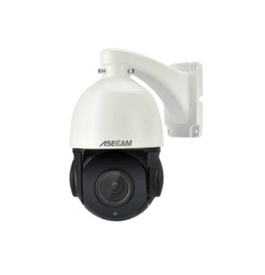
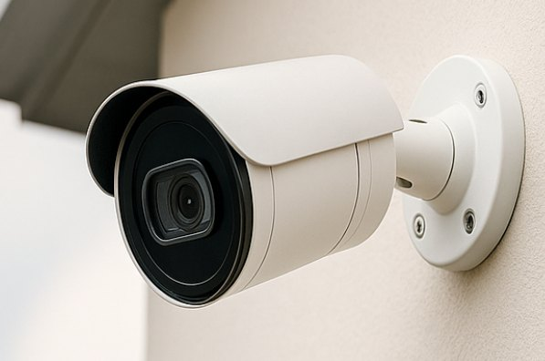
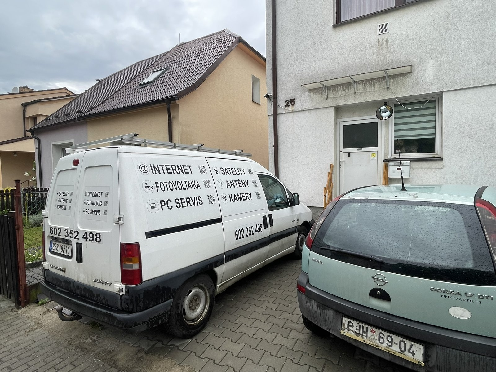

Technika
Otočné, statické i kompletní kamerové sety
Pro menší domy často stačí jedna až několik chytrých kamer. Pro firmy a rozsáhlejší objekty je vhodnější kabelový systém s rekordérem.


Montáž a nastavení bezpečnostních kamer v Plzni a okolí. Online dohled v mobilu, upozornění při pohybu, záznam na SD kartu, rekordér nebo cloud.

Vyberu vhodné zařízení podle objektu, internetu, napájení a způsobu používání. Nejde jen o kameru, ale o spolehlivý obraz, záznam a jednoduchou obsluhu.
Rodinné domy, chaty, zahrady, vjezdy nebo hlídání dětí na pozemku. Otočné kamery, notifikace a jednoduchá mobilní aplikace.
Statické i IP kamery, záznam na disk, monitoring provozoven, skladů, restaurací a komerčních objektů.
Řešení pro místa bez kabeláže, bez internetu nebo bez napájení. Solární dobíjení, SIM karta nebo lokální záznam.
Kamerový systém navrhnu podle reálného místa. Při montáži řeším výhled, ochranu proti manipulaci, noční přísvit, napájení, kabeláž a záznam.

Pro menší domy často stačí jedna až několik chytrých kamer. Pro firmy a rozsáhlejší objekty je vhodnější kabelový systém s rekordérem.

Cena se odvíjí od počtu kamer, kvality obrazu, kabeláže, umístění, disku a způsobu připojení. Přesnější cenu je nejlepší domluvit po telefonu a podle fotek objektu.
Otočné kamery, Wi‑Fi připojení, SD karta, aplikace v telefonu. Instalace dle umístění.
Orientační práce pro kabelově připojený systém včetně nastavení aplikace.
Set s kamerami a rekordérem, bez disku. Cena záleží na parametrech a kabeláži.
Pošlete fotky objektu nebo zavolejte. Probereme počet kamer, možnosti napájení, internet, záznam a rozpočet.